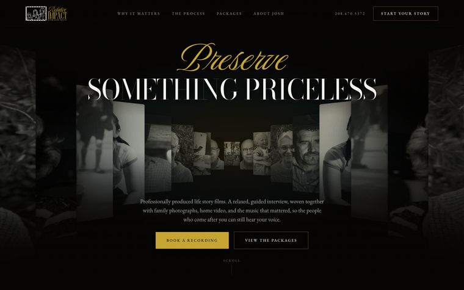
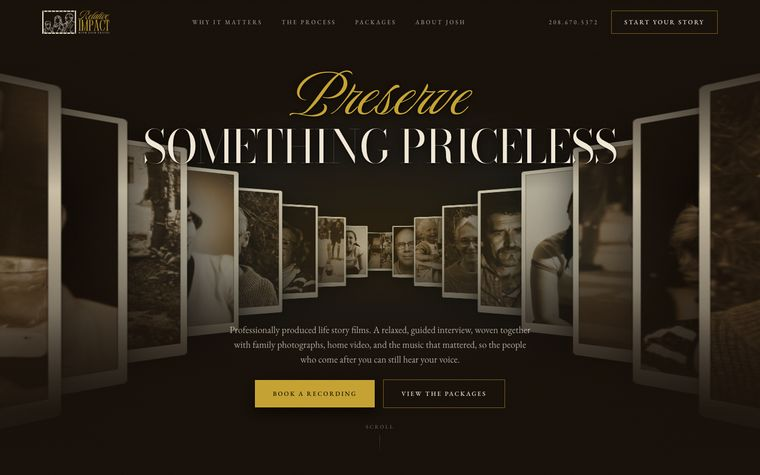
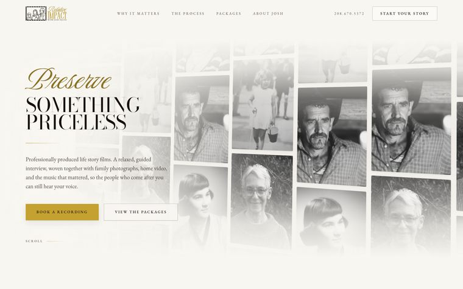

Three directions
For your website
The same words and the same photographs, presented three different ways. Open each one and give it a moment, the pictures move. Worth a look on your phone as well as your computer.

Direction One
Cinematic
Near black, with a corridor of photographs travelling toward you. The most dramatic of the three, and the closest in feel to your welcome packet.
Open
Direction Two
Heirloom
Warm brown and sepia, where every photograph is a print on a cream mount. Softer and more personal, like an album open on a table.
Open
Direction Three
Paper
Light and editorial, with a wall of prints drifting slowly down behind the words. The calmest of the three and the easiest to read at length.
OpenA few things to know before you look. These are drafts, so not everything is finished yet. Each one has the top of the page, one full section and the footer. The menu links and buttons do not go anywhere yet.
The photographs are stand-ins. They come from a stock library, not from your work, and they are there to show how real photographs will sit in the layout. Your own films and family photographs would replace all of them.
Two of the fonts are stand-ins too. The display and body faces in your welcome packet are not licensed for websites yet, so these use the closest free matches. The script in your logo is exactly right. Worth deciding early, because swapping them later changes every headline.